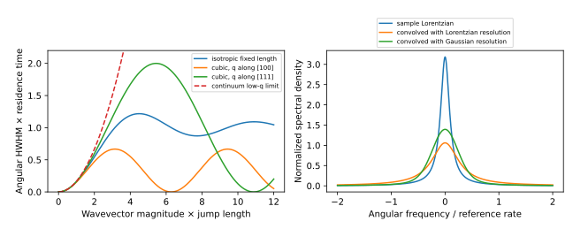

IIT Hyderabad · NPTEL · Independent study edition
Mössbauer and neutron scattering probes
A broadened nuclear resonance can report motion, but its width also contains the finite lifetime of the nuclear state and the instrument response. Neutron scattering adds wavevector dependence, which can distinguish a continuum displacement model from discrete jumps. Both methods require a consistent dictionary between lifetime, angular frequency, energy, and full or half width.
Lecture 41 supplies Mössbauer and quasielastic neutron methods. The evaluated Fe57 half-life was checked in the BIPM DDEP Co57 report, PDF p. 11, Tables 2–3. The jump-model formulas below are derived locally; the original Chudley–Elliott paper was available only at publisher-abstract level.
19.1 Recoil-free resonance preserves momentum conservation L41 00:21
Emission or absorption of a gamma photon transfers momentum. For an isolated nucleus the associated recoil energy can move emission and absorption out of resonance. In a crystal, a fraction of events can occur without creating or destroying a lattice phonon. Momentum is then accepted by the crystal as a whole with negligible recoil energy on the nuclear-line scale. This recoil-free fraction enables the Mössbauer effect. It does not mean that photon momentum disappears.
A source and absorber can be brought through resonance by moving one relative to the other. At speeds small compared with the speed of light \(c_{\rm light}\), a source velocity component v along the photon path shifts energy by \(\Delta E\simeq E_\gamma v/c_{\rm light}\). A measured transmission versus velocity spectrum is therefore an energy spectrum expressed through the Doppler conversion. Hyperfine magnetic and electric interactions, chemical environment, thickness, source structure, and motion can all change its shape.
For the Fe57 resonance used with a Co57 source, the inspected BIPM DDEP report, p. 11, Table 2 lists the 14.41295 keV level and half-life \(t_{1/2}=98.0(4)\) ns. An exponential population \(P(t)=e^{-t/\tau_n}\) reaches one half at \(t_{1/2}=\tau_n\ln2\). Its mean lifetime is consequently 141.384 ns using the central value, rather than 98 ns. The reported precision of the evaluated input should not be inferred from the extra digits of that arithmetic conversion.
A decaying transition amplitude has factor \(e^{-t/(2\tau_n)}\). Its frequency response has a Lorentzian intensity profile with angular-frequency half width at half maximum \(1/(2\tau_n)\). Multiplying by reduced Planck constant \(\hbar\) converts angular frequency to energy. Thus the natural single-transition energy full width is
\[ \Gamma_{E,\rm natural}^{\rm FWHM}=\frac{\hbar}{\tau_n}. \tag{19.1} \]The laboratory computes 4.6555 neV for the central half-life input, corresponding to a single-line Doppler full width about 0.09683 mm/s at the stated resonance energy. Identical Lorentzian source and absorber lines would contribute additive widths in a transmission convolution, before other broadening mechanisms. One should not substitute the half-life into (19.1) or confuse the width of one transition with a complete measured source–absorber spectrum.
19.2 Motion enters through a self-correlation function L41 09:35
Let \(\boldsymbol r(t)\) be the position of a tagged resonant atom. At wavevector \(\boldsymbol q\), in m⁻¹, define its intermediate self-scattering function \(I_s(\boldsymbol q,t)=\langle e^{i\boldsymbol q\cdot[\boldsymbol r(t)-\boldsymbol r(0)]}\rangle\). It is the characteristic function of the displacement distribution. The average includes an equilibrium ensemble or a justified stationary time average. This object connects nuclear resonance motion broadening and incoherent neutron scattering without equating their experimental resolutions.
For unrestricted isotropic Gaussian diffusion with coefficient D, each Cartesian displacement has variance \(2D|t|\). The Gaussian characteristic function gives \(I_s=e^{-Dq^2|t|}\), where \(q=|\boldsymbol q|\). More generally, suppose the relevant correlation has a single exponential rate \(r(q)>0\), in s⁻¹. Define the angular-frequency spectrum with the explicit convention
\[ S_s(q,\omega)=\frac1{2\pi}\int_{-\infty}^{\infty} I_s(q,t)e^{-i\omega t}dt =\frac{r(q)}{\pi[\omega^2+r(q)^2]}. \tag{19.2} \]The last equality follows by the exponential cosine transform. The spectrum integrates to one over angular frequency and has angular-frequency HWHM r. Since \(E=\hbar\omega\), energy HWHM is \(\hbar r\) and energy FWHM is \(2\hbar r\). A width in hertz instead uses \(\omega=2\pi\nu\). These distinctions account for common factors of two and two-pi; none is a physical discrepancy once the conventions are aligned.
In a simple recoil-free resonance model, multiplying the natural time correlation by a motion correlation that decays as \(e^{-r|t|}\) adds r to its angular HWHM. The additional energy FWHM is then \(2\hbar r\). This statement assumes independent exponential broadening and a compatible line model. Hyperfine multiplets, distributions of environments, and nonexponential motion require more than one Lorentzian width.
If high-wavevector decorrelation corresponds to independent jumps with total rate \(\Gamma\) and length ell, one obtains \(r\simeq\Gamma\) and \(D=\ell^2\Gamma/6\). Only then does an additional energy FWHM \(\Delta\Gamma_E\) imply \(D=\ell^2\Delta\Gamma_E/(12\hbar)\). A local reorientation or correlated vacancy encounter need not obey that identification. The precise jump derivation below establishes when it is justified.
19.3 Neutrons supply both momentum and energy transfer L41 21:04
A neutron with wavevector \(\boldsymbol k\) has momentum \(\hbar\boldsymbol k\) and nonrelativistic kinetic energy \(\hbar^2k^2/(2m_n)\), with neutron mass \(m_n\). Scattering from initial to final states transfers wavevector \(\boldsymbol q=\boldsymbol k_i-\boldsymbol k_f\) and energy \(\hbar\omega=E_i-E_f\) to the specimen. The sign convention should be recorded because instruments may display specimen energy gain or loss differently.
An elastic component has zero energy transfer within resolution. Inelastic features can reflect phonon excitation and other modes. Quasielastic neutron scattering (QENS) resolves a narrow distribution near zero transfer associated with relaxational dynamics. For incoherent scattering dominated by single-particle correlations, the self-function in (19.2) is the relevant idealized object. Coherent scattering instead contains correlations between different atoms as well, and can also carry transport information. It is incorrect to claim that only incoherent scattering ever probes diffusion.
In the continuum free-diffusion limit, the predicted angular HWHM is \(Dq^2\). Measuring width at several q values tests this dependence and distinguishes it from a q-independent instrumental or local time scale. A linewidth too narrow relative to resolution cannot reliably determine arbitrarily small D; a broad feature can leave the accessible energy window. The method's time and length windows follow from resolution and wavevector coverage, rather than a universal diffusivity interval.
The synthetic laboratory chooses jump length 0.3 nm and mean waiting time one nanosecond, giving \(D=1.5\times10^{-11}\) m²/s in the independent isotropic model. At \(q=10^9\) m⁻¹, the continuum angular HWHM is \(1.5\times10^7\) s⁻¹ and energy HWHM is 9.87318 neV. The corresponding full widths are twice those values. These are calculated illustration scales, not measured diffusion for a named element.
19.4 Derive jump-sensitive widths and the low-q limit L41 30:18
Suppose jumps occur as a Poisson process of total rate \(\Gamma=1/\tau_j\), with independent identically distributed jump vectors \(\boldsymbol\ell\). Let their characteristic function be \(\varphi(\boldsymbol q)=\langle e^{i\boldsymbol q\cdot\boldsymbol\ell}\rangle\). Conditional on exactly n jumps, the displacement characteristic function is \(\varphi^n\). Averaging over the Poisson count gives
\[ I_s(\boldsymbol q,t)=\sum_{n=0}^{\infty} e^{-\Gamma t}\frac{(\Gamma t)^n}{n!}\varphi^n =\exp[-\Gamma t(1-\varphi(\boldsymbol q))],\quad t\geq0. \tag{19.3} \]For a symmetric jump distribution the characteristic function is real. The rate entering (19.2) is \(r=\Gamma(1-\varphi)\). With fixed length ell and uniformly distributed directions, averaging over polar angle yields \(\varphi=\tfrac12\int_{-1}^1e^{iq\ell u}du=\sin(q\ell)/(q\ell)\). Therefore
\[ r(q)=\frac1{\tau_j}\left[1-\frac{\sin(q\ell)}{q\ell}\right] \simeq\frac{\ell^2q^2}{6\tau_j}=Dq^2\quad(q\ell\ll1). \tag{19.4} \]The low-q limit depends only on the second displacement moment. At larger q, the discrete jump geometry becomes visible; the continuum quadratic law cannot be extrapolated indefinitely. For six equally probable jumps along cubic axes, \(\varphi=[\cos(q_x\ell)+\cos(q_y\ell)+\cos(q_z\ell)]/3\). Different orientations of a single crystal give different high-q rates even though they share the isotropic quadratic limit. Figure 19.1 compares the [100] and [111] directions with the isotropic-direction model.
Chudley and Elliott's original jump-diffusion paper is a historical primary reference for this class of interpretation; only its indexed publisher abstract was inspected. Equations (19.3)–(19.4) are therefore supplied as independent derivations under their explicit assumptions, not attributed to an unread page or equation number.
A vacancy can exchange repeatedly with the same atom, producing a sequence of correlated jumps. The independent-jump Poisson model then fails at the atom-jump level. One possible reduced description treats whole encounters as independent events with their own net-displacement distribution. Its rate and net displacement, rather than the count of every microscopic exchange, control the long-time coefficient. Returning jumps can decorrelate a local signal while contributing little net transport. Detailed finite-q spectra require the actual encounter model, not an arbitrary universal correction factor.
19.5 Fit the spectrum convolved with the measured resolution
A measured spectrum is an intrinsic scattering model blurred by an instrument response, with backgrounds and sometimes elastic contributions. If \(R(\omega)\) is a normalized resolution function, an idealized observation is \(S_{\rm obs}=R*S_s\), where the asterisk denotes integration over intermediate frequency. The official Mantid convolution-fitting documentation explicitly models this relation. It supports fitting the convolved physical model rather than pretending a fitted observed width is already an intrinsic one.
Two normalized Lorentzians with HWHM a and b convolve to another Lorentzian with HWHM \(a+b\). Their time-domain exponential factors multiply, adding decay rates. Two independent Gaussian widths instead add variances. A Gaussian convolved with a Lorentzian gives a Voigt profile; subtracting measured full widths linearly is not a valid general deconvolution. In the right panel of Figure 19.1, angular frequency is scaled by an arbitrary positive reference rate \(r_{\rm ref}\). The intrinsic Lorentzian has HWHM \(0.1r_{\rm ref}\). The Lorentzian resolution has HWHM \(0.2r_{\rm ref}\), giving combined HWHM \(0.3r_{\rm ref}\); the alternative Gaussian resolution has standard deviation \(0.2r_{\rm ref}\), giving the plotted Voigt profile. These are explicitly chosen synthetic kernels, not resolution functions matched to equal full width.

A careful analysis calibrates resolution under relevant conditions, distinguishes coherent and incoherent weights for the sample, records energy versus frequency units and half versus full widths, and examines q and temperature dependence. A single broadened line does not uniquely select jump length, waiting time, dimensionality, or vacancy mechanism. Mixtures of localized and translating populations may add an elastic fraction plus several dynamic components, increasing the inverse problem's ambiguity.
The laboratory computes the lifetime conversion, natural width, Doppler conversion, jump-model small-q limit, and synthetic resolution curves. It checks that the discrete model tends to the expected quadratic coefficient, then saves its actual output. It does not fit source nuclear or neutron spectra, infer an empirical jump mechanism, or validate a specific instrument resolution.
19.6 Exercises with complete solutions
1. Half-life is not mean lifetime
Convert the evaluated 98 ns half-life into the mean lifetime and natural single-transition energy FWHM.
Worked solution
From \(e^{-t_{1/2}/\tau_n}=1/2\), \(\tau_n=98/\ln2=141.384\) ns using the central input. Then \(\hbar/\tau_n=4.65549\) neV is the natural single-line FWHM. Its HWHM is half that value. Substituting 98 ns directly into the mean-lifetime formula would overestimate the width by \(1/\ln2\). The arithmetic precision does not reduce the evaluated half-life uncertainty.
2. Derive the spectral normalization
Show that the exponential self-correlation gives a normalized Lorentzian with angular HWHM r.
Worked solution
Evenness reduces the transform to \(\pi^{-1}\int_0^\infty e^{-rt}\cos\omega t\,dt=r/[\pi(r^2+\omega^2)]\). Integrating over all omega gives one because the antiderivative is \(\pi^{-1}\arctan(\omega/r)\). The value at zero is \(1/(\pi r)\); at absolute omega r the value is half as large. Thus HWHM is r and FWHM is twice r. Energy conversion multiplies either width by hbar.
3. Recover the diffusion coefficient from jumps
Expand the isotropic fixed-length characteristic function at small q and identify D.
Worked solution
The expansion \(\sin u/u=1-u^2/6+O(u^4)\) with \(u=q\ell\) gives rate \(r=\ell^2q^2/(6\tau_j)+O(q^4)\). Matching the continuum rate Dq² identifies \(D=\ell^2/(6\tau_j)\). This also follows from a Poisson mean jump count t/tau and independent mean-square displacement ell² per jump. Correlated or confined jumps can invalidate that identification even while producing measurable local relaxation.
4. Why does crystal orientation matter?
For six cubic-axis jumps, compare the characteristic functions along [100] and [111], and explain their common low-q limit.
Worked solution
Along [100], \(\varphi=(\cos u+2)/3\). Along [111], each Cartesian projection is \(u/\sqrt3\), giving \(\varphi=\cos(u/\sqrt3)\). Both expand as \(1-u^2/6+O(u^4)\), so they have the same isotropic quadratic diffusion coefficient. Their higher-order terms differ because finite wavevectors resolve the discrete directional network. Powder averaging can suppress some orientation information and needs its own averaging model.
5. When may widths be subtracted?
A fitted observed line is broader than the resolution. State two cases with different valid broadening rules.
Worked solution
If both intrinsic and resolution profiles are Lorentzian under the same frequency convention, their HWHM values add and linear subtraction can recover the intrinsic HWHM. If both are independent Gaussians, variances add, so squared standard deviations are subtracted. A Lorentzian–Gaussian convolution is Voigt and generally requires fitting that convolved shape. Using linear full-width subtraction for arbitrary resolution can bias the inferred relaxation rate and therefore D.
6. Broadening without a unique mechanism
A Mössbauer line broadens with temperature and a QENS width is approximately quadratic at small q. What is established, and what remains unidentified?
Worked solution
With controlled source and resolution, the first observation supports increased dynamics or a changed local spectral environment, but does not by itself isolate translation from other broadening. The second supports a diffusive long-wavelength correlation rate in the measured channel under its scattering model. Jump geometry, individual waiting time, vacancy encounters, and species-specific transport still require finite-q, orientation, isotope, structural, and temperature evidence. A common low-q coefficient does not imply a unique microscopic network.
19.7 Sources and boundaries
L41 supplies both probe families. The BIPM report supports the evaluated level energy and half-life at its inspected tables. The Mantid page supports resolution convolution; the Chudley–Elliott reference is used at abstract-level historical scope, while the Poisson derivation is explicit here.
The independent-jump model assumes stationary isotropic or specified crystalline jumps and exponential waiting times. Real spectra may contain coherent collective motion, correlated encounters, multiple species, localized fractions, and non-Lorentzian resolution. The following chapters introduce fast microstructural paths, for which a measured displacement distribution can depart strongly from homogeneous bulk diffusion even when each local region obeys a sensible transport law.
Python laboratory
Run code/ch19.py. Inputs and scientific limits are specified in the chapter and program.
Complete runnable source
"""Nuclear lifetime and synthetic jump-scattering linewidth checks."""
import json
from pathlib import Path
import matplotlib
import matplotlib.pyplot as plt
import numpy as np
from scipy.constants import c, electron_volt, hbar
from scipy.special import voigt_profile
matplotlib.use("Agg")
matplotlib.rcParams["svg.hashsalt"] = "ch19"
BASE = Path(__file__).resolve().parents[1]
half_life = 98e-9
mean_life = half_life / np.log(2)
natural_fwhm_ev = hbar / mean_life / electron_volt
resonance_ev = 14412.95
doppler_fwhm = c * natural_fwhm_ev / resonance_ev
ell, residence = 0.3e-9, 1e-9
diffusion = ell**2 / (6 * residence)
u = np.linspace(0, 12, 601)
rate_iso = 1 - np.sinc(u / np.pi)
rate_100 = (1 - np.cos(u)) / 3
rate_111 = 1 - np.cos(u / np.sqrt(3))
small = 0.01
small_ratio = (1 - np.sinc(small / np.pi)) / (small**2 / 6)
assert abs(small_ratio - 1) < 1e-5
q = 1e9
angular_hwhm = diffusion * q * q
energy_hwhm_ev = hbar * angular_hwhm / electron_volt
freq = np.linspace(-2, 2, 1001)
fig, ax = plt.subplots(1, 2, figsize=(9, 3.6))
ax[0].plot(u, rate_iso, label="isotropic fixed length")
ax[0].plot(u, rate_100, label="cubic, q along [100]")
ax[0].plot(u, rate_111, label="cubic, q along [111]")
ax[0].plot(u, u * u / 6, "--", label="continuum low-q limit")
ax[0].set(
xlabel="Wavevector magnitude × jump length",
ylabel="Angular HWHM × residence time",
ylim=(0, 2.2),
)
ax[0].legend(fontsize=7)
ax[1].plot(
freq, 0.1 / (np.pi * (freq * freq + 0.1**2)), label="sample Lorentzian"
)
ax[1].plot(
freq,
0.3 / (np.pi * (freq * freq + 0.3**2)),
label="convolved with Lorentzian resolution",
)
ax[1].plot(
freq,
voigt_profile(freq, 0.2, 0.1),
label="convolved with Gaussian resolution",
)
ax[1].set(
xlabel="Angular frequency / reference rate",
ylabel="Normalized spectral density",
)
ax[1].legend(fontsize=7, loc="upper center", bbox_to_anchor=(0.5, 1.25))
fig.tight_layout()
fig.savefig(
BASE / "assets/figures/ch19-scattering.svg", metadata={"Date": None}
)
out = {
"Fe57_evaluated_half_life_s": half_life,
"Fe57_mean_life_s": float(mean_life),
"natural_single_line_FWHM_eV": float(natural_fwhm_ev),
"natural_single_line_Doppler_FWHM_m_s": float(doppler_fwhm),
"synthetic_jump_length_m": ell,
"synthetic_residence_time_s": residence,
"synthetic_D_m2_s": diffusion,
"test_q_per_m": q,
"continuum_angular_HWHM_per_s": angular_hwhm,
"continuum_energy_HWHM_eV": float(energy_hwhm_ev),
"small_q_jump_to_continuum_ratio": float(small_ratio),
}
text = json.dumps(out, indent=2)
(BASE / "code/ch19-output.json").write_text(text + "\n", encoding="utf-8")
print(text)
Recorded execution output
{
"Fe57_evaluated_half_life_s": 9.8e-08,
"Fe57_mean_life_s": 1.4138411400711842e-07,
"natural_single_line_FWHM_eV": 4.655487369095562e-09,
"natural_single_line_Doppler_FWHM_m_s": 9.68351379536536e-05,
"synthetic_jump_length_m": 3e-10,
"synthetic_residence_time_s": 1e-09,
"synthetic_D_m2_s": 1.5e-11,
"test_q_per_m": 1000000000.0,
"continuum_angular_HWHM_per_s": 15000000.0,
"continuum_energy_HWHM_eV": 9.8731793542636e-09,
"small_q_jump_to_continuum_ratio": 0.9999950000127988
}